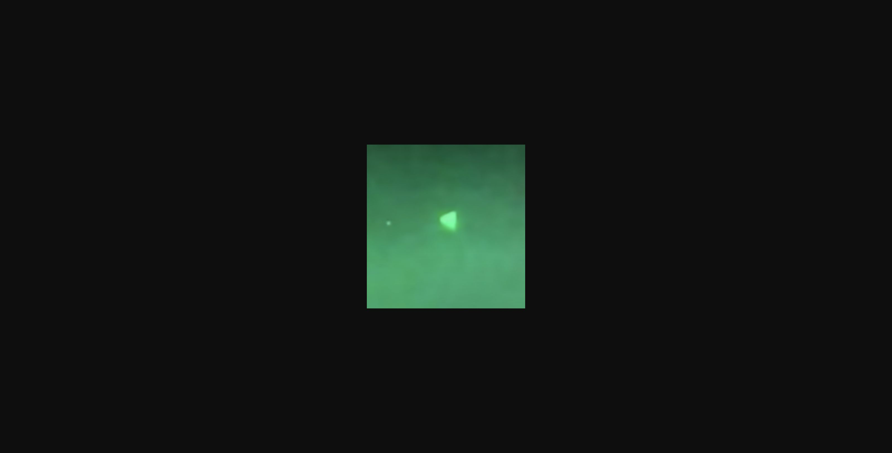
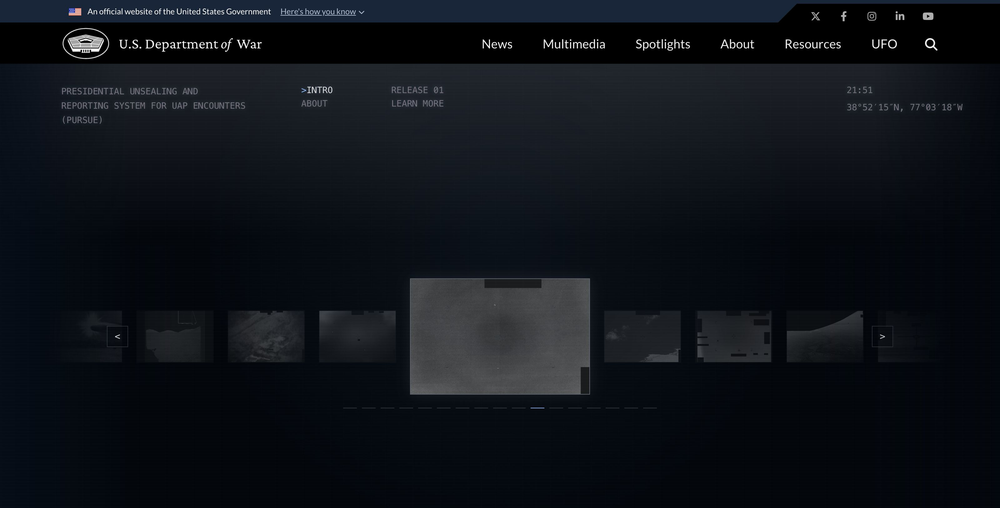

UFO/UAP 视觉档案全记录
美国国防部解密 & 全球著名影像
一、美国国防部官方确认的UAP视频 （共5段）
以下视频全部经过五角大楼发言人官方确认真实性。三段于2020年4月27日正式解密，两段于2021年由UAPTF确认。
官方原始文件下载（U.S. Naval Air Systems Command FOIA）：
navair.navy.mil/foia/documents → FLIR.mp4 / GIMBAL.wmv / GOFAST.wmv二、五角大楼确认的照片：金字塔 / 球体 / 橡果 / 金属飞艇
2021年4月，五角大楼发言人Susan Gough确认以下照片由美国海军人员拍摄，UAPTF已纳入调查。


"Acorn / Sphere / Metallic Blimp" 三类物体
2021年4月，除金字塔照片外，五角大楼同时确认了三类UAP的静态照片：橡果形 (Acorn)、球形 (Sphere) 和金属飞艇形 (Metallic Blimp)。这些照片的时间和地点未完全公开，但形状分类已被AARO纳入标准UAP形态学分类。
五角大楼发言人Gough在确认声明中说："I can confirm that the referenced photos and videos were taken by United States Navy personnel. The UAPTF has included these incidents in their ongoing examinations."
三、war.gov/UFO · PURSUE系统 实况截图
2026年5月8日上线的总统级别UFO档案解密系统。首批161份文件。以下为实况截图。

国防部长Pete Hegseth声明："These files, hidden behind classifications, have long fueled justified speculation — and it's time the American people see it for themselves."
首批Release 01文件列表（FBI部分档案）
| 文件名 | 机构 | 发布日期 | 格式 |
|---|---|---|---|
| 65_HS1-834228961_62-HQ-83894_SECTION_2 | FBI | 2026.05.08 | |
| 65_HS1-834228961_62-HQ-83894_SECTION_3 | FBI | 2026.05.08 | |
| 65_HS1-834228961_62-HQ-83894_SECTION_4 | FBI | 2026.05.08 | |
| 65_HS1-834228961_62-HQ-83894_SECTION_5 | FBI | 2026.05.08 | |
| 65_HS1-834228961_62-HQ-83894_SECTION_6 | FBI | 2026.05.08 | |
| 65_HS1-834228961_62-HQ-83894_SECTION_7 | FBI | 2026.05.08 | |
| 65_HS1-834228961_62-HQ-83894_SECTION_9 | FBI | 2026.05.08 | |
| 65_HS1-834228961_62-HQ-83894_SECTION_10 | FBI | 2026.05.08 | |
| 65_HS1-834228961_62-HQ-83894_SERIAL_130 | FBI | 2026.05.08 | |
| 65_HS1-834228961_62-HQ-83894_SERIAL_153 | FBI | 2026.05.08 | |
| ...共161份文件（17页） |
四、历史上最著名的非官方UFO照片 （全球经典）
以下照片虽非五角大楼官方确认，但构成UFO目击史的核心视觉记录。


五、国会UAP听证会全记录 （2024年）
2024年11月13日，众议院监督与问责委员会举行UAP听证会。Luis Elizondo、退役海军少将Tim Gallaudet、记者Michael Shellenberger作证，首次公开披露"Immaculate Constellation"秘密项目。
听证会关键披露
记者Michael Shellenberger作证称五角大楼消息源告诉他存在一个名为"Immaculate Constellation"的未公开特殊访问计划（SAP），收集了大量高分辨率UAP影像。他提交了一份12页报告给国会。他的原话："It's not those fuzzy photos and videos that we've been given, it's very high resolution."
Luis Elizondo声称："UAP are real. Advanced technologies not made by our government — or any other government — are monitoring sensitive military installations around the globe." 他称美国正处于"多十年秘密军备竞赛"中。
退役海军少将Tim Gallaudet作证他在一次航母打击群演习中收到关于UAP导致多起近空中相撞的紧急邮件——但第二天邮件从他的收件箱中被删除。
第二天（2024.11.14），AARO局长Kosloski在另一场记者会上表示：累计1,652案件，<2.5%显示异常特征，未发现外星证据。两套叙事在同一周内形成鲜明对比。
六、完整事件时间线 （1942 - 2026）
七、目击解释框架：五种理论
主流解释（AARO + 科学界）
- 传感器故障或伪影（红外眩光/散景/视差效应）
- 普通飞行器（商用飞机/无人机/气象气球）
- 自然大气现象（球状闪电/冰晶折射）
- Starlink等卫星星座导致批量误报
- 电子战欺骗（敌方使用radar spoofing制造假目标）
替代解释（吹哨人 + UFO社区）
- 非人类智能技术（外星飞船）
- 秘密军事项目（美国自身的机密飞行器）
- 对手突破性技术（中/俄高超音速或反重力技术）
- 跨维度/超自然现象（Vance的"恶魔论"）
- 未知物理现象（人类尚未理解的自然规律）
八、关键人物
九、官方文件获取渠道
war.gov/UFO — PURSUE系统。首批161份PDF。每几周新批次。
war.gov/UFO → 交互式图表，可按机构/日期/地点筛选aaro.mil — AARO官网。历史报告、年度报告、图片和视频。
aaro.milnavair.navy.mil/foia/documents — 海军航空系统司令部FOIA阅览室。FLIR.mp4 / GIMBAL.wmv / GOFAST.wmv 原始文件。
navair.navy.mil/foia/documentsWikipedia — Pentagon UFO videos — 所有已知UAP视频的维基百科条目，包含Wikimedia Commons托管版本。
en.wikipedia.org/wiki/Pentagon_UFO_videos资料来源
- war.gov/UFO — PURSUE系统官方网站 (2026.05.08上线)
- The Hill — "Pentagon releases new batch of UFO files" (2026.05.08) 链接
- The Hill — "Vance says he's 'obsessed' with UFO files, calls aliens 'demons'" (2026.03.28) 链接
- The Hill — "Pentagon UFO office received more than 700 reports" (2024.11.14) 链接
- The Hill — "House panel hears of hidden UAP trove" (2024.11.13) 链接
- Wikipedia — "Pentagon UFO videos" 链接
- Wikipedia — "All-domain Anomaly Resolution Office" 链接
- U.S. Naval Air Systems Command FOIA 链接
- AARO — "Report on the Historical Record Volume I" (2024.03.06)
- ODNI — "Preliminary Assessment: UAP" (2021.06.25)
- Wikimedia Commons — 所有历史UFO照片均来自Wikimedia Commons公共领域/CC许可
- YouTube — 美国海军/To The Stars Academy/新闻媒体公开上传的UAP视频